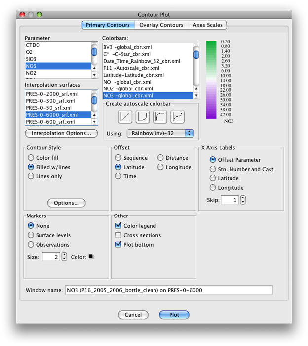
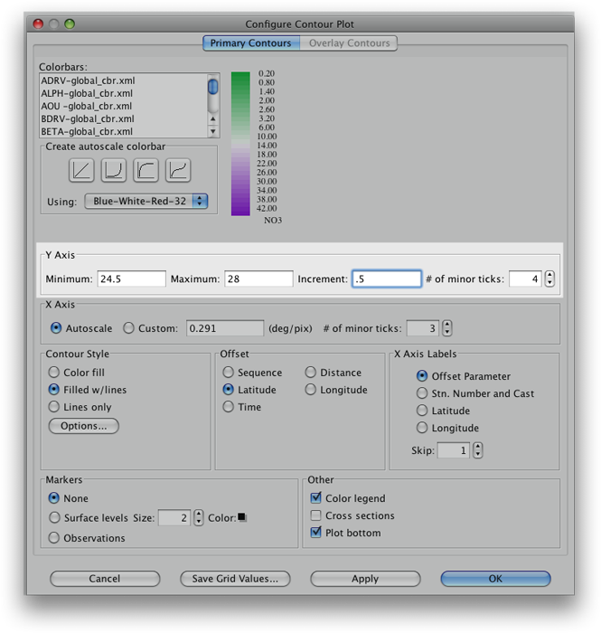
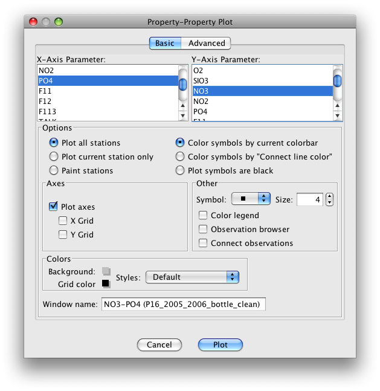
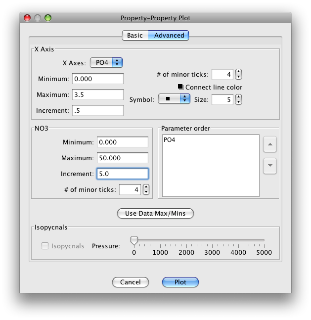
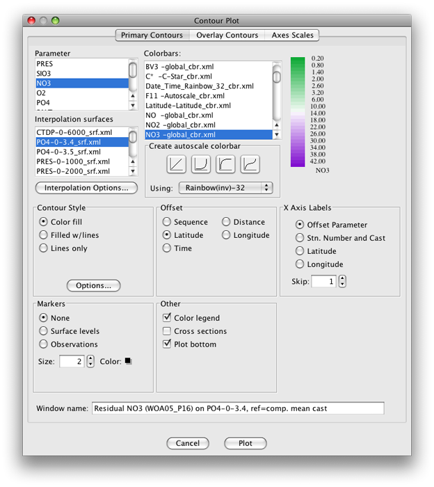

Example 6A: Sections with Vertical Axes other than Pressure (or Depth)¶
From experience with the Examples for previous DPO chapters, you should now be familiar with vertical sections using pressure as the vertical axis, and know how to use them to illustrate the distributions of seawater properties in the X-Z plane. In some cases use of a vertical axis instead of pressure can best illuminate aspects of section data.
JOA has few limits on the choice of vertical axis parameter, though some choices are more relevant than others. Here we will explore two alternatives, using:
A Pacific meridional section of a commonly-measured “nutrient” - nitrate - for which we will plot a traditional pressure-axis vertical section
A section with a density parameter (sigma-0) as the vertical axis.
A section with another nutrient - phosphate - as the vertical axis.
Files that may be needed or created in this example:
P16_2005_2006_bottle_clean.joa
Exercise 6A-01: Vertical Sections - Contour Plots with Sigma-0 as the Vertical Axis¶
Start JOA
File → Open… → P16_2005_2006_bottle_clean.joa
Plots → Contour…
Set up the Primary Contours panel (as shown below) with these parameters:
Under Interpolation surfaces select PRES-0-6000_srf.xml
Under Colorbars select NO3 -global_cbr.xml
Under Contour Style select (click) filled w/ lines
Under Offset select (click) Latitude

Fig 6a-01 Primary Contours panel of the Contour Plot dialog box¶
Remember from earlier discussion in the DPO JOA Examples that south (the Antarctic region in this case) is on the left and north (Kodiak Island) is on the right. The section itself mostly follows the 150°W meridian.
Plots → Contour…
Set up the Primary Contours panel with these parameters (the same as the previous plot, but now with sigma-0 as the vertical axis):
Under Interpolation surfaces select SIG0-global_srf.xml
Under Colorbars select NO3 -global_cbr.xml
Under Contour Style select (click) filled w/ lines
Under Offset select (click) Latitude
Note
JOA will calculate SIG0 automatically for this plot
You can see that most of the deeper water (the higher NO3, deeper purple layer) lies in a relatively small range of density (relatively small range of sigma-0).
Indeed, most of the variation in potential density (pressure-compensated density) in most ocean regions takes place in the upper 1000 meters.
To adjust the vertical axis range in the sigma-0-based vertical section:
Bring up the Configure Contour Plot dialog box:
Double-click or control-click on the plot
Or type [ctrl/cmd]-R or Edit → Edit: plotname when the plot is the front-most window.
In the resulting Configure Contour Plot dialog box change the Y-Axis minimum, maximum, increment, and number of minor ticks to suit your needs, for example:

Fig 6a-04 Y Axis adjustment panel in the Configure Contour¶
These two plots - nitrate versus pressure and nitrate versus density - provide an interesting view of Pacific Ocean nitrate distributions.
For example, the very low nitrate concentrations in the upper layers of the subtropical gyres in the South and North Pacific, evidence of equatorial upwelling, and the broad deep tongue of high concentrations extending south from the North Pacific.
Learn More
Nitrate and Phosphate
Nitrate and phosphate are seawater nutrients heavily involved in ocean biochemical cycles
Phytoplankton require nitrogen and obtain it from nitrate when it is available. This depletes nitrate in areas where photosynthetic production is or was recently active. And when organic matter in the oceans decays (in a biochemical process called respiration), oxygen is used up and the nutrients are released into the water. This partly explains some aspects of the origin of the deep broad tongue of high nitrate seawater in the section plot: this is related to zones where organic matter has sunk into the deeper water and decayed. In some very low-oxygen waters, the bacteria which are decaying the organic matter must obtain oxygen from nitrate to continue respiration. This locally denitrifies the seawater.
Phosphate is another nutrient heavily involved in ocean biochemical cycles. Its uptake in photosynthesis and release in respiration are usually so closely tied to those of nitrate that their ratio of variability is quite close to constant, especially in a single ocean region. But in low-oxygen waters, the bacteria which are decaying the organic matter, when obtaining oxygen from nitrate, do not, to first order, obtain oxygen from phosphate to continue respiration. Thus the ratio of phosphate to nitrate can be altered in those circumstances.
Exercise 6A-02: Making a Property-Property Plot with Nitrate and Phosphate¶
To examine the relationship between nitrate versus phosphate in the Pacific Ocean, we will use the P16_2005_2006_bottle_clean.joa to make a Property-Property plot of the nitrate versus phosphate.
Plots → Property-Property…
Set up the Basic panel of the Property-Property Plot dialog box as shown below:

Fig 6a-06 Basic panel of the Property-Property plot¶
Set up the Advanced panel the Property-Property Plot dialog box as shown below:

Fig 6a-07 Advanced panel of the Property-Property plot¶
You can observe from the plot that phosphate is indeed linearly related to nitrate.
The information from the color bar shows that most of the deep water in this data set falls within a relatively small range of high concentrations of both nitrate and phosphate. You can also see that the relationship has variations.
For example, look at the range of nitrate values for PO4 = 1.5 μmol/l. While the bulk of the data have nitrate values near ca. 22-23 μmol/l for this value of phosphate, some have nitrate values as low as ca. 16 μmol/l. That water has been denitrified by bio-geochemical processes.
Exercise 6A-03: Vertical Sections - Making a Phosphate Based Interpolation Surface¶
Examine the spatial variability of the nitrate versus phosphate distribution in the Pacific Ocean by plotting a horizontal section of nitrate, with phosphate as the vertical axis.
You may recall that to plot a Contour Plot, JOA interpolates the data onto predefined standard levels of the parameter chosen for the vertical axis. (That parameter is most commonly pressure and we just did a plot with sigma-0 as the vertical axis.)
Here you will need a file with standard levels of phosphate, but your copy of JOA might not have a pre-made interpolation surface for phosphate (PO4). No problem - you can make one if there is no PO4-based interpolation surface to your liking:
The plot is “upside down” with respect to true vertical: lowest nitrates and phosphates - at the bottom of this plot - are from the surface waters; i.e. the surface waters appear here at the bottom of the plot.
Examine
There are a lot of “wiggles” - how should these be interpreted?
Data noise may contribute to smaller scale features in the plot, but the largest pattern of variation suggests that in the latitude range 10-15°N nitrate values for a given phosphate concentration are low. There are other similar incidences near 3-8°S and 52°N. These must be signatures of denitrification.
If you find the small “wiggles” distracting in the P16_2005_2006_botclean data section plot of nitrate versus phosphate, you might try making these same Pacific nitrate sections with the WOA09_P16.joa data file. The averaging which takes places during preparation of the World Ocean Atlas annual average 1-degree data files results in distinctly “smoother” contour lines.
For example, here is the plot immediately above, but made with the WOA09_P16.joa data file:
Recalling that in the Pacific there are deep extrema for each nutrient, and that here JOA was carrying out an interpolation, how did JOA handle the extrema? If, when setting up a Contour Plot, and after you have selected an interpolation surface, you click on the Interpolation Options… button, you will see in the resulting Interpolation Options dialog box two choices for Interpolation direction: Top down and Bottom up.
When doing an interpolation, JOA chooses the first occurrence of each standard level it encounters. So when interpolating “top down” (default) onto phosphate surfaces in the Pacific, it finds the nitrate value at the deep phosphate surface on the top of the deep phosphate maximum. If the “bottom up” choice is selected, then it would find the nitrate value at the bottom of the deep phosphate maximum.
Exercise 6A-04: Vertical Sections - Making a Contour Section With the Mean Subtracted¶
Java OceanAtlas can also be used to calculate and plot the variations of a parameter from the mean (average).
For example, when you are making a JOA Contour (vertical section) Plot, you can use the Interpolation Options dialog box to specify that along each standard level (in the case above, along each value of phosphate), that the mean value of the plotted property (nitrate in this case) should be calculated and subtracted from each data value.
The resulting plot will then show the relative highs and lows of the plotted property on each level(on each standard surface).
File → Open… → WOA05_P16.joa
Plots → Contour
Set up the Primary Contours panel of the Contour Plot dialog box as shown below:

Fig 6a-14 Primary Contours panel of the Contour Plot¶
Click on the Interpolation Options button in this dialog box, and set up the Interpolation Options as shown below:
Note
To select all the stations in the data file, as shown below, you must click on the check-mark button just to the right of the list of stations.
When you click OK you will be back in the Contour Plot dialog box. Note that because you are now looking at differences from the mean, the default color/contour bar is no longer applicable. To fix it, you need to create a new color bar.
First select the Red-White-Blue-32 color bar under the Create autoscale colorbar sub-panel of the Contour Plot dialog box.
Then click on the linear ramp in that same sub-panel. Your new color bar appears as shown below:
It is not centered on zero (oceanographically because there is some fairly depleted nitrate values in this data set). To center the new color bar on zero, double-click on the color bar to bring up the JOA Colorbar Editor dialog box
Set up the dialog box as shown below and then click on the linear ramp after Create with Shape: